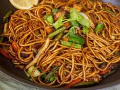

Chowmein

Description
Chowmein is a popular stir-fried noodle dish enjoyed throughout Nepal,
China, and many other Asian countries. It is made by cooking noodles with
vegetables, meat, and flavorful sauces over high heat.
Chowmein can be prepared with chicken, buff, pork, or just vegetables.
It is quick to make, packed with flavor, and commonly served as a lunch,
dinner, or street food.
Ingredients
- 200 g chowmein noodles
- 1 chicken breast (sliced)
- 1 onion
- 1 carrot
- 1 bell pepper
- 2 cloves garlic
- 2 tablespoons soy sauce
- 1 tablespoon cooking oil
- Salt and black pepper
Steps
- Boil the noodles according to the package instructions.
- Heat oil in a pan and sauté the garlic until fragrant.
- Add the chicken and cook until fully done.
- Add the onion, carrot, and bell pepper, then stir-fry for a few minutes.
- Add the cooked noodles and soy sauce.
- Toss everything together until well combined.
- Season with salt and pepper, then serve hot.
Home